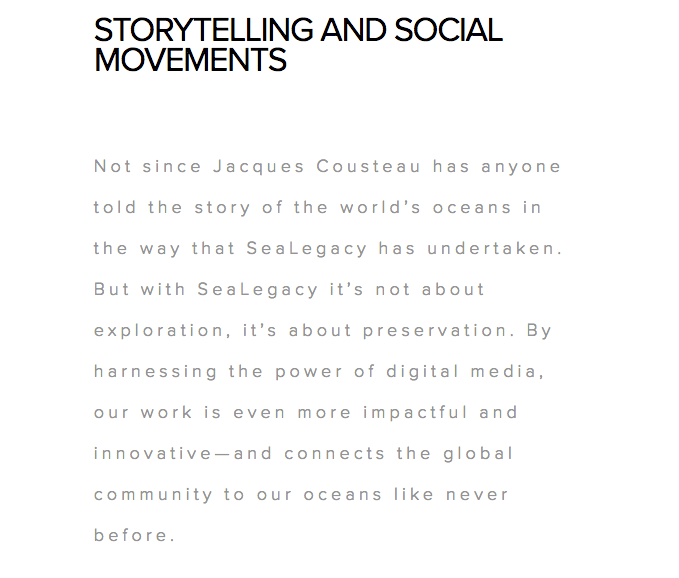
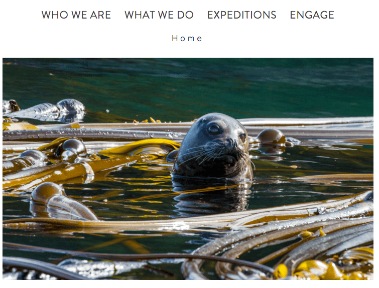
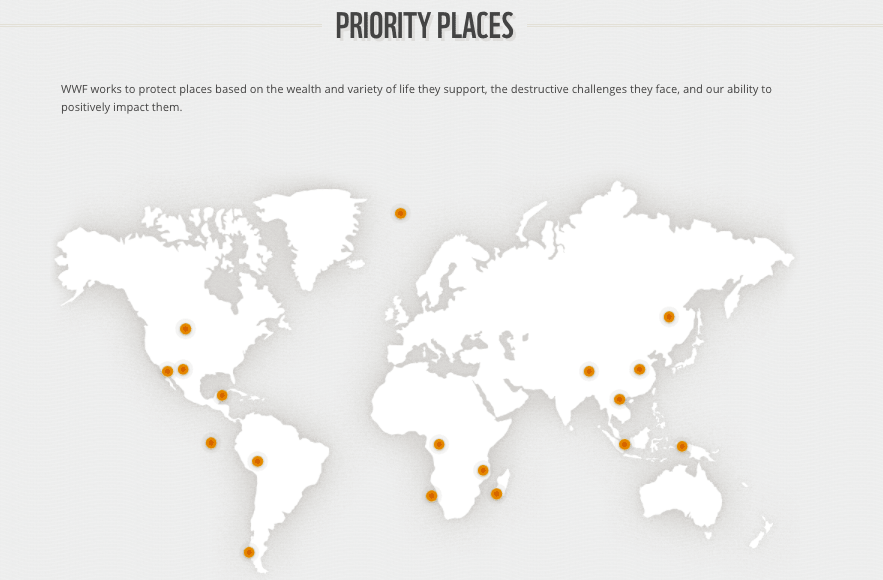

Website 1: SeaLegacy
SeaLegacy's website strives to produce powerful media and art that gives people hope.
They use photographs, videos, and stories to share the urgency and the hope they feel for our oceans.
The interface is responsive which is useful when viewing the content on a mobile device.
They use large full-width images on each page to show the beauty of the ocean. The content is nicely
laid out in a simple and readable manner. However, I feel that there may be too much kerning within
the text and the font color is a little too light. Similar to the WWF website, SeaLegacy splits up their
expeditions based on location. This makes it easy for the user to find different habitats all
under the realm of ocean life.

SeaLegacy
There isn't much interactive parts to the web page besides a few hovering effects. I believe
that the user would feel more connected to the issues if they had the chance to interact
with the media on the page. When compared to the World Wildlife Fund website, this website is definitely
more interested in a specific part of the environment. This is good because it makes it easy to navigate
and the user knows exactly what information they will find on there. Sometimes information may get
lost if the website has too many components to it.

SeaLegacy
Website 2: World Wildlife Fund
The World Wildlife Fund is the world's leading conservation non-profit organization and works with more than 100
countries to ensure innovative solutions that meet the needs of both the Earth and people.
Under the Species tab, the website lists eight different kinds of endangered species. However, they actually
have information about many more animals than those listed which you can see if you click on the "View
Species" link. This can be confusing and hard to navigate at a quick glance because the user could think
that the WWF only researches and protects those eight species. To improve this, I think they should list
the habitats of species instead of the specific animals itself to make it more general. For example, they could
use "Marine", "Woodland", "Jungle", etc. as categories for navigation. Then, those links can have more links
dedicated to specific species within the habitat.
There is an interactive map under the "Places" tab which is great for user interaction. I feel that they could
expand on this even more by adding the species of animals that live in that region so that the user would know
exactly where in the environment that the animals are getting affected the most.
I go on this website quite often and wish that the website would update the information more constantly with new
pictures and videos. The website is responsive for the most part. I found a slight formatting issue on one of the
pages when shrunken down to mobile size. The typography used is very readable and simple. I feel that the user
interface compared to SeaLegacy's is much more visually appealing. The website also has information about much
more than just marine life.

World Wildlife Fund